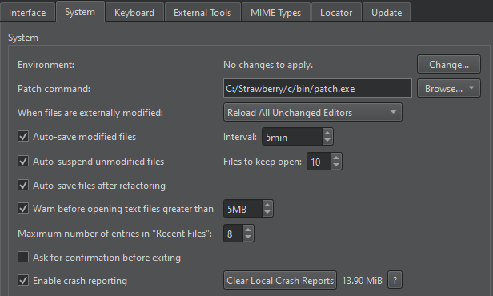

Turn on crash reports
Qt Creator uses Google Breakpad to collect information about crashes and to send it to Sentry for processing. Breakpad might capture arbitrary contents from the memory of the crashed process, including user-sensitive information, URLs, and other content users have trusted Qt Creator with. However, the crash reports are used for the sole purpose of fixing software errors.
To turn on crash reports:
- Go to Preferences > Environment > System.

- Select Enable crash reporting.
Crash reports are sent automatically if they don't exceed the file size limit that Sentry sets for accepting them. You are not notified about sending the reports or whether it succeeded or failed.
Clear local crash reports
Qt Creator stores crash reports on the computer in the following directories:
- On Windows:
%APPDATA%\QtProject\qtcreator\crashpad_reports - On Linux and macOS:
$HOME/.config/QtProject/qtcreator/crashpad_reports
To free up disk space that crash reports reserve on the computer, select Clear Local Crash Reports. You can see the size of the crash reports next to the button.
Select ? to view more information about Breakpad and the security policy.
Note: The best way to report a crash is to create a bug report where you paste the corresponding stack trace.
See also Contact Qt.